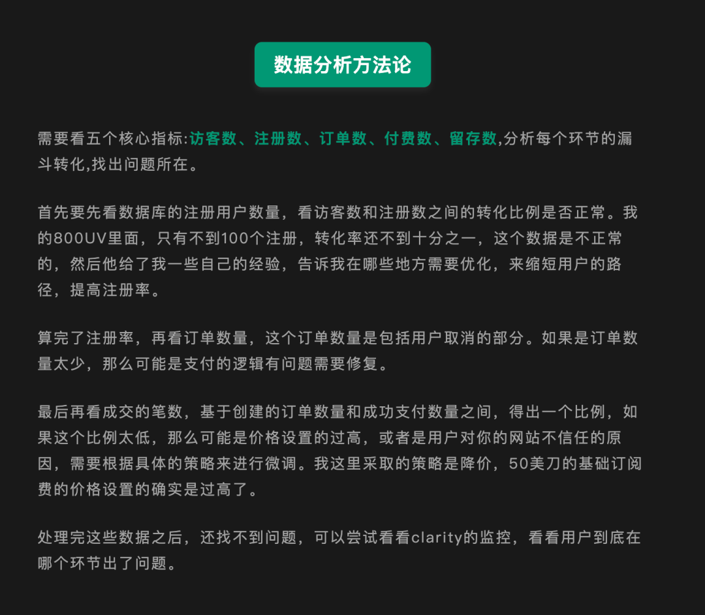
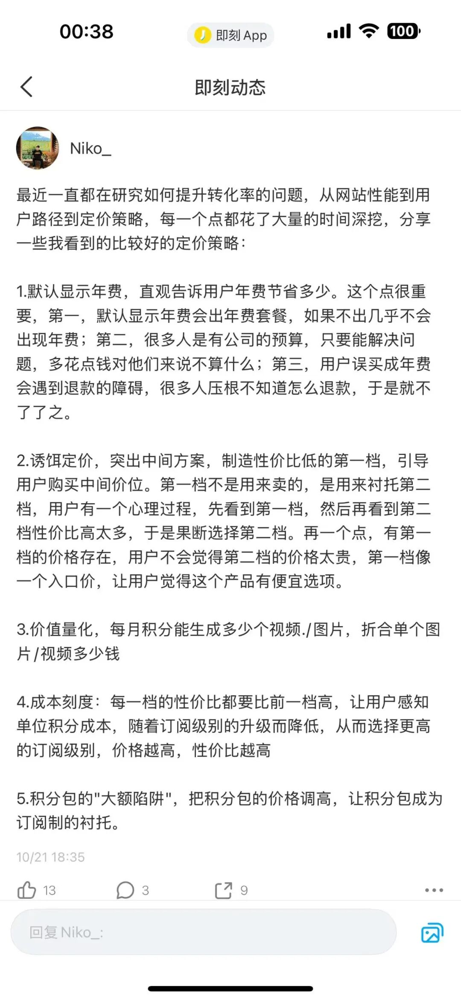
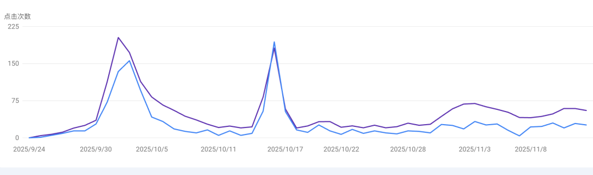

写在前面
大家好，我是Niko，总算忙完了手里大部分工作，开始写一个完整的复盘，上个月在我的小伙伴的帮助下，实现了从不赚钱到持续出单，中间学到了很多东西，
整个10月份一共做了5个站，只有1个站做起来了，而且持续有流量。
但是这个成功的站，教会了我七件事
1. 基础模板完善
一开始网站上线的时候一堆bug，登陆登陆不行，支付支付有问题，解完了所有bug之后，一不小心把100多个内页全部提交到GSC了，总之踩了一堆坑。
通过这个站，初步完善了自己的基础模板。慢慢完善了用户交互细节，sitemap，userjounery，把该踩的坑全都了个遍。
2.真正感受了一次流量
之前都是纸上谈兵，看别人的案例，听别人讲经验。直到自己的站第一次出现真实的UV增长，才真正体会到那种兴奋和紧张——流量来了，但能不能留住？能不能转化？这是两码事。一开始我的网站1300UV，全是SEO的精准流量，但是一单都没出，属实有点离谱。
3. 优化转化漏斗
然后我开始系统性地分析流量转化漏斗：访问 → 注册 → 订单数 → 支付成功。这四个环节，每个环节的流失都在告诉你问题在哪。然后从最开始1300UV却一单都没有，到后来持续出单。
具体的分析方法，我在之前的文章里已经讲过，这里就不再赘述了，直接放个截图。

4. 批量看竞品
我批量研究了一批站点的用户路径。不是走马观花，而是一个个点进去，从用户视角走一遍完整流程。为什么人家留存高？为什么人家转化好？答案都在细节里。通过这种"笨功夫"，我逐步优化了自己的用户路径设计。
5. 定价策略决定了你赚什么钱
同样是批量看竞品，我专门研究了他们的定价策略。收获了一些核心的定价设计，比如默认显示年费；然后故意制造性价比低的第一档。通过把这些设计用到网站里，效果明显，后续出单基本都是第二档和第三档的大单。
这些信息我基本当时就随手分享到推特和即刻上了，具体细节如图：

6. 外链是把双刃剑
这个教训有点痛。一开始排名进了前5，很开心。结果被大站的内页顶下来了，于是我继续加外链，又上去了。然后我飘了，用程序批量加了一堆外链，直接被搜索引擎制裁，又掉下来了。
所以我的网站流量曲线，有两个波峰，其他时间基本都在"趴地下"。就这样，我还是开出了600刀的年费订单，并且后续持续出单。

7. 重视用户反馈，会有意外收获
最大笔的年费——600刀，就是因为我认真回复了一个用户的反馈，结果他直接升级成了最大档档年费会员。
这个经历让我深刻理解：用户愿意给你反馈，本身就是一种信任，而你的响应速度和态度，会直接影响转化。用心回复每一封用户的邮件，会有惊喜。
死磕一个月，终于敢上牌桌了
说实话，为了这个站，我整整搞了一个月。
每天的工作就是：找问题 → 解决问题 → 分析竞品 → 优化网站，然后再找问题 → 解决问题，循环往复。
这个过程很枯燥，也很煎熬。有时候改了一个版本，数据反而更差了。有时候觉得已经很完美了，用户还是不买账。
但正是这种"死磕"的过程，让我慢慢跑通了整个流程。我现在知道一个站从0到1需要经历哪些坑，哪些数据是关键指标，哪些优化是伪需求。
然后是11月，又做了几个新站
这次和上个月最大的区别是： 我敢砸钱了。
因为已经有了上一个视频SaaS的经验，我知道自己能承接住流量。所以这次新站直接上来就投钱，直接快速试错。
哥飞新词大赛的收获
哥飞的新词大赛结果出来后，我用自己的站和同一批站点进行了对比，果然发现差距很大。
除了流量问题，最明显的是 用户停留时长和跳出率 ——自己网站的数据差太多了。
这让我意识到自己漏掉一个很重要的问题，在流量上来之后，在用户付费之前，需要把用户数据拉上去。之前朋友也一直和我提用户数据的重要性，一直没当回事。
通过这个对比，我渐渐看懂了一些新站的设计：
- • 为什么要加多一个单独的工具框内页？
- • 为什么要在视频SaaS里送图片生成次数？
这些看似小的设计，背后都有留存和转化的考量。
这次实践让我再一次完善了上站模板，增加了一些必要的交互设计和套路。等把这个经验完全迭代好，再去做下一个站，再看反馈。
思路的转变
之前我还想打难度小点的词，现在看来思路完全不对。我现在的策略是： 就是要打高强度，打高竞争的词。
只有给自己上强度，通过和优秀对手的对比，才能真正看出差距，得出有价值的经验，然后不断迭代。
这个月的收获
上上周和空弦的线下聚了一次，收获颇丰，看到了一个优秀的产品人对产品的极致思考，属实牛逼。
然后又重新看了一遍他的分享，Get了一些产品方面的打法，网站的的设计细节，和用户沟通的细节，和一些执行路径，现在正在逐步开始把相关的经验落地执行。
周六约了truman，然后又重新看了一下他的文章，有了一些新的收获，真的越来越佩服他了，他更多的是通过自己实践，不断的执行，拿到结果和经验。
我更多的是通过混圈，拿到别人已经实践过的经验去实践，然后再迭代，然后再获取信息，再迭代，基本上从出海到现在没有自己去趟过什么不确定的路，没有遇到过什么卡点，都是别人已经验证过的经验和方法论，没办法，喜欢走捷径，哈哈
关于信息强度
最近有了一些新的感悟，我每次找有结果的人聊了之后，都会感觉大有收获，然后马上回去实践并且能快速获得反馈帮我进入下一个阶段。
而那些收获，基本朋友问我的时候，我都会分享，但是同样的信息，通过我传递出来就变成了没什么有价值的信息，甚至怀疑我是不是在藏着掖着，我真的是挺无奈的。
大多数人都想要喂饭式的教学或者是什么一飞冲天的奇技淫巧，做了立马月入千刀的神操作，根本就不存在这种东西，属实想多了。
根本原因还是在于信息强度：
线下交流的作用就在于，帮你把脑子里已经有的信息，进行排列组合，然后在最重要的信息旁边加上一个警报，告诉你立刻马上去做，不管多难都得搞定它。
同样的信息，自己可能早就已经知道，只不过因为不知道重要程度，所以选择不去做，或者做了一点遇到困难就放弃。但是换成是有结果的人告诉我这个事情，并且带着上下文环境，我就会立马执行，然后死磕到底，直到出结果为止。
写在最后：迭代是唯一的出路
如果让我用一句话总结这段时间的收获，那就是： 不断迭代。
不断上站，用下一个站的经验去优化上一个站，不断覆盖更多的试错面积。
这个过程没有捷径，只有坚持。但当你真正跑通流程，那种成就感是无法替代的。
继续死磕，继续迭代。下个月见。